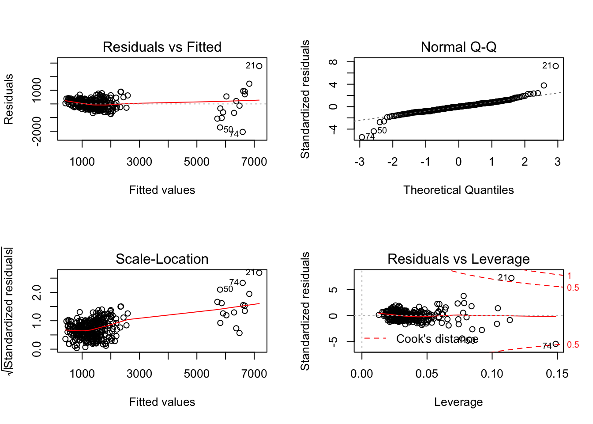
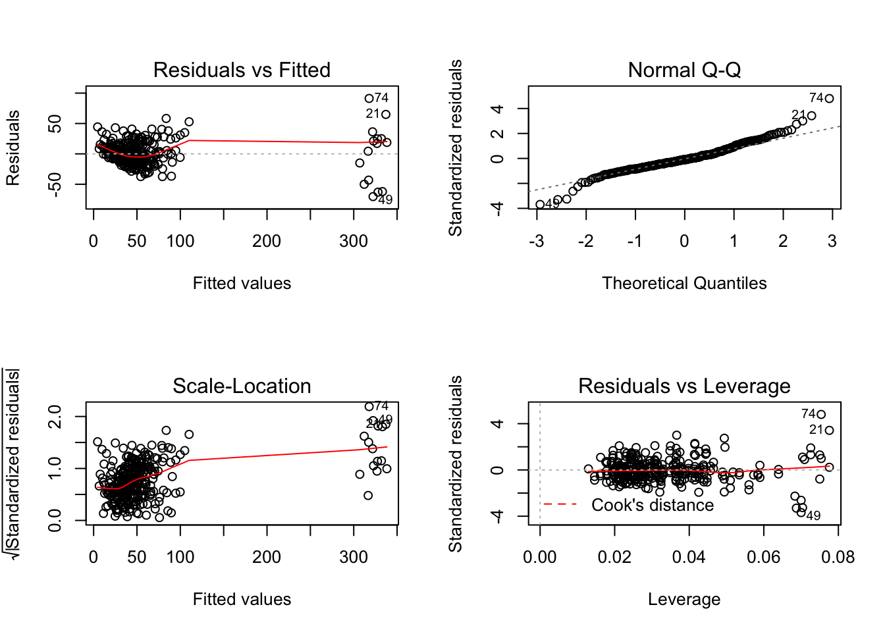

nyc <- read_csv(file = "../p8105nyc_311_100k.csv") %>%
janitor::clean_names()## Warning: 13949 parsing failures.
## row col expected actual file
## 100085 taxi_pick_up_location 1/0/T/F/TRUE/FALSE WEST 50 STREET AND BROADWAY '../p8105nyc_311_100k.csv'
## 100150 taxi_pick_up_location 1/0/T/F/TRUE/FALSE JFK Airport '../p8105nyc_311_100k.csv'
## 100172 taxi_pick_up_location 1/0/T/F/TRUE/FALSE 625 EAST 14 STREET MANHATTAN '../p8105nyc_311_100k.csv'
## 100215 taxi_pick_up_location 1/0/T/F/TRUE/FALSE Other '../p8105nyc_311_100k.csv'
## 100268 taxi_pick_up_location 1/0/T/F/TRUE/FALSE Other '../p8105nyc_311_100k.csv'
## ...... ..................... .................. ............................. ..........................
## See problems(...) for more details.nyc_tidy <- nyc %>%
filter(borough != "Unspecified") %>%
separate(closed_date,
into = c("closed_month","closed_day","closed_year"),
sep = "\\/" ) %>%
separate(closed_year,
into = c("closed_year","closed_time"),
sep = " ") %>%
mutate(
created_year = as.numeric(created_year),
created_month = as.numeric(created_month),
created_day = as.numeric(created_day),
city = as.factor(city),
status = as.factor(status),
borough = as.factor(borough),
agency = as.factor(agency),
complaint_type = as.factor(complaint_type),
community_board = as.factor(community_board),
open_complaint = ifelse(status == "Closed", yes = 0, no = 1),
# open_complaint = ifelse(is.na(closed_year), yes = 1, no = 0),
complaint_simp = case_when(
str_detect(complaint_type,
regex("street", ignore_case = TRUE))
|str_detect(complaint_type,
regex("sidewalk", ignore_case = TRUE))
|str_detect(complaint_type,
regex("curb", ignore_case = TRUE)) ~ "Street Condition",
str_detect(complaint_type,
regex("noise", ignore_case = TRUE)) ~ "Noise",
str_detect(complaint_type,
regex("heat", ignore_case = TRUE)) ~ "Heat",
str_detect(complaint_type,
regex("water", ignore_case = TRUE))
|str_detect(complaint_type,
regex("leak", ignore_case = TRUE))
|str_detect(complaint_type,
regex("plumbing", ignore_case = TRUE))
|str_detect(complaint_type,
regex("boiler", ignore_case = TRUE)) ~ "Water/plumbing",
str_detect(complaint_type,
regex("paint", ignore_case = TRUE)) ~ "Paint/Plaster",
str_detect(complaint_type,
regex("asbestos", ignore_case = TRUE))
|str_detect(complaint_type,
regex("lead", ignore_case = TRUE))
|str_detect(complaint_type,
regex("hazard", ignore_case = TRUE))
|str_detect(complaint_type,
regex("mold", ignore_case = TRUE)) ~ "Hazard Material",
str_detect(complaint_type,
regex("elevator", ignore_case = TRUE))
|str_detect(complaint_type,
regex("maintenance", ignore_case = TRUE))
|str_detect(complaint_type,
regex("electric", ignore_case = TRUE))
|str_detect(complaint_type,
regex("stairs", ignore_case = TRUE))
|str_detect(complaint_type,
regex("window", ignore_case = TRUE))
|str_detect(complaint_type,
regex("appliance", ignore_case = TRUE)) ~ "Maintenance",
str_detect(complaint_type,
regex("sanita", ignore_case = TRUE))
|str_detect(complaint_type,
regex("rodent", ignore_case = TRUE))
|str_detect(complaint_type,
regex("dirty", ignore_case = TRUE))
|str_detect(complaint_type,
regex("sew", ignore_case = TRUE))
|str_detect(complaint_type,
regex("standing water", ignore_case = TRUE)) ~ "Sanitation",
str_detect(complaint_type,
regex("tree", ignore_case = TRUE)) ~ "Tree",
str_detect(complaint_type,
regex("parking", ignore_case = TRUE))
|str_detect(complaint_type,
regex("car", ignore_case = TRUE))
|str_detect(complaint_type,
regex("drive", ignore_case = TRUE))
|str_detect(complaint_type,
regex("vehicle", ignore_case = TRUE))
|str_detect(complaint_type,
regex("traffic", ignore_case = TRUE)) ~ "Car/Traffic",
str_detect(complaint_type,
regex("air", ignore_case = TRUE)) ~ "Air Quality",
str_detect(complaint_type,
regex("collection", ignore_case = TRUE)) ~ "Collection",
str_detect(complaint_type,
regex("homeless", ignore_case = TRUE))
|str_detect(complaint_type,
regex("panhandling", ignore_case = TRUE)) ~ "Homeless"),
health_complaint = ifelse(
complaint_simp %in% c("Heat", "Water/Plumbing", "Hazard Material", "Sanitation", "Air Quality"), yes = 1, no = 0),
complaint_simp = as.factor(complaint_simp),
open_health_complaint = case_when(
open_complaint == 1 & health_complaint == 1 ~ 1,
open_complaint == 0 | health_complaint == 0 ~ 0
),
# openCorr = ifelse(status == "Closed", yes = 0, no = 1),
status = as.factor(status)
)## Warning: Expected 2 pieces. Additional pieces discarded in 489924 rows [1,
## 2, 3, 4, 5, 6, 7, 8, 9, 11, 12, 13, 14, 15, 16, 17, 18, 20, 21, 22, ...].Adding community district data
inc_df = read_csv("./Med_income_2017.csv") %>%
janitor::clean_names() %>%
mutate(
pop_1000s = round(total_population/1000, 0),
inc_1000s = round(median_income/1000, 1),
income_bracket = case_when(
median_income >= 20000 & median_income <= 30000 ~ "20k-30k",
median_income > 30000 & median_income <= 40000 ~ "30-40k",
median_income > 40000 & median_income <= 50000 ~ "40-50k",
median_income > 50000 & median_income <= 60000 ~ "50-60k",
median_income > 60000 & median_income <= 70000 ~ "60-70k",
median_income > 70000 & median_income <= 80000 ~ "70-80k",
median_income > 80000 & median_income <= 90000 ~ "80-90k",
median_income > 90000 & median_income <= 100000 ~ "90-100k",
median_income > 100000 & median_income <= 125000 ~ "100-125k",
median_income > 125000 & median_income <= 150000 ~ "125k+",
),
income_bracket = as.factor(income_bracket)
)
# adding income to data and removing any observations that do not have a specific community board to link to income
add_inc = left_join(nyc_tidy, inc_df, by = "community_board") %>%
filter(is.na(median_income) == FALSE) %>%
mutate(
year_fac = as.factor(created_year)
)## Warning: Column `community_board` joining factor and character vector,
## coercing into character vector# grouping by community district and year
cb_group_year = add_inc %>%
group_by(community_board, created_year) %>%
add_count(community_board, name = "number_complaints") %>%
mutate(
num_unsolved = sum(open_complaint),
num_health_complaint = sum(health_complaint),
num_open_health = sum(open_health_complaint)
) %>%
select(number_complaints, num_unsolved, num_open_health, everything())
########## including year
cb_group_year_distinct = cb_group_year %>%
select(community_board, number_complaints, inc_1000s, num_unsolved, num_health_complaint, borough, per_black_nh, per_hisp, per_white_nh, median_income, num_open_health, created_year, year_fac, pop_1000s) %>%
distinct() %>%
arrange(community_board) %>%
mutate(
borough = relevel(borough, ref = "MANHATTAN")
)
cb_group_year_distinct = within(cb_group_year_distinct, borough <- relevel(borough, ref = "MANHATTAN"))We looked at number of complaints from 2014-2018 predicted by year, borough, community district (CD) level variables including median income (in the 1000s), total population (in the 1000s), percent non-hispanic black, percent hispanic, and number of unresolved complaints.
# number of complaints
options(scipen = 5)
num_comp_model_year = lm(number_complaints ~ inc_1000s + num_unsolved + per_black_nh + per_hisp + pop_1000s + borough +created_year, data = cb_group_year_distinct)
summary(num_comp_model_year) %>% broom::tidy() %>% knitr::kable()| term | estimate | std.error | statistic | p.value |
|---|---|---|---|---|
| (Intercept) | -163287.177855 | 35914.7442391 | -4.546522 | 0.0000080 |
| inc_1000s | -1.555321 | 1.4607959 | -1.064708 | 0.2878968 |
| num_unsolved | 5.876763 | 1.2146345 | 4.838297 | 0.0000021 |
| per_black_nh | 1.758247 | 1.3756797 | 1.278093 | 0.2022421 |
| per_hisp | 8.541813 | 2.1122688 | 4.043905 | 0.0000675 |
| pop_1000s | 5.571607 | 0.6794512 | 8.200158 | 0.0000000 |
| boroughBRONX | -310.798451 | 98.1789474 | -3.165632 | 0.0017128 |
| boroughBROOKLYN | -615.413713 | 79.3924909 | -7.751536 | 0.0000000 |
| boroughQUEENS | -571.258467 | 79.4875312 | -7.186768 | 0.0000000 |
| boroughSTATEN ISLAND | 3028.965162 | 364.5048420 | 8.309808 | 0.0000000 |
| created_year | 81.224333 | 17.8110137 | 4.560343 | 0.0000076 |
summary(num_comp_model_year) %>% broom::glance() %>% knitr::kable()| r.squared | adj.r.squared | sigma | statistic | p.value | df |
|---|---|---|---|---|---|
| 0.8950626 | 0.8914315 | 408.9682 | 246.5023 | 0 | 11 |
par(mfrow = c(2,2))
plot(num_comp_model_year)
Comments:
The total number of complaints in significantly predicted by year, borough and CD number of unsolved complaints, percent Hispanic, and population total.
# number of unresolved
num_unsolved_model_year = lm(num_unsolved ~ inc_1000s + per_black_nh + per_hisp + pop_1000s + borough +created_year, data = cb_group_year_distinct)
summary(num_unsolved_model_year) %>% broom::tidy() %>% knitr::kable()| term | estimate | std.error | statistic | p.value |
|---|---|---|---|---|
| (Intercept) | -10312.0927115 | 1627.2977413 | -6.3369428 | 0.0000000 |
| inc_1000s | 0.1686011 | 0.0699254 | 2.4111574 | 0.0165237 |
| per_black_nh | 0.3261291 | 0.0636909 | 5.1204972 | 0.0000006 |
| per_hisp | -0.2291447 | 0.1012281 | -2.2636464 | 0.0243348 |
| pop_1000s | 0.2940901 | 0.0279424 | 10.5248781 | 0.0000000 |
| boroughBRONX | 21.7112119 | 4.5720733 | 4.7486578 | 0.0000032 |
| boroughBROOKLYN | 2.0181909 | 3.8364338 | 0.5260591 | 0.5992492 |
| boroughQUEENS | 17.6890411 | 3.6998094 | 4.7810683 | 0.0000028 |
| boroughSTATEN ISLAND | 282.9941758 | 5.8636417 | 48.2625291 | 0.0000000 |
| created_year | 5.1066667 | 0.8071780 | 6.3265684 | 0.0000000 |
summary(num_unsolved_model_year) %>% broom::glance() %>% knitr::kable()| r.squared | adj.r.squared | sigma | statistic | p.value | df |
|---|---|---|---|---|---|
| 0.9146911 | 0.9120436 | 19.77174 | 345.4901 | 0 | 10 |
par(mfrow = c(2,2))
plot(num_unsolved_model_year)
Comments:
A complaint was labeled unresolved if its status was not labeled as “closed”. The total number of unresolved complaints in significantly predicted by year of complaint, borough, and CD median income, number of unsolved complaints, percent non-Hispanic Black and Hispanic, and population total.